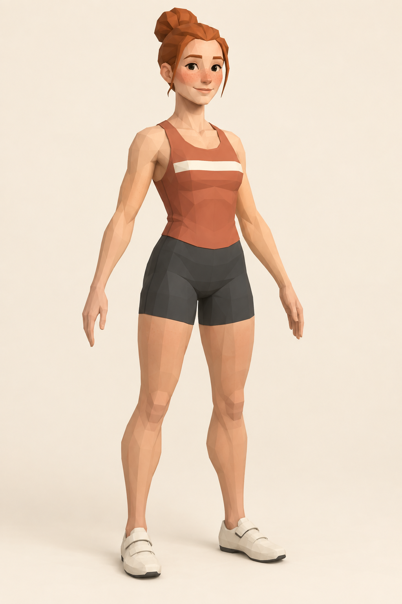

<!doctype html>
<html lang="en">
<meta charset="utf-8">
<meta name="viewport" content="width=device-width, initial-scale=1">
<title>June · reconstruction study</title>
<style>
  * { box-sizing: border-box; }
  body { margin: 0; height: 100vh; display: flex; flex-direction: column; color: #343e36; background: #f0e9db; font: 14px system-ui; }
  header { padding: 20px 28px; display: flex; align-items: center; gap: 20px; }
  h1 { margin: 0; font: 24px Georgia; }
  header p { margin: 0; flex: 1; }
  button, select { padding: 9px 12px; color: inherit; background: #faf6ed; border: 1px solid #aab0a2; border-radius: 4px; font: inherit; }
  main { display: grid; grid-template-columns: 1fr 1fr; flex: 1; min-height: 0; }
  figure { margin: 0; min-width: 0; position: relative; overflow: hidden; }
  figcaption { position: absolute; z-index: 1; top: 12px; left: 28px; }
  img, canvas { width: 100%; height: 100%; display: block; }
  img { object-fit: contain; }
  .head-study img { width: 400%; height: auto; margin-left: -150%; }
  .detail-study img { width: 240%; height: auto; margin-left: -68%; margin-top: 190px; }
  footer { padding: 14px 28px; display: flex; align-items: center; gap: 18px; flex-wrap: wrap; }
  footer label { display: flex; align-items: center; gap: 8px; }
  #status { flex: 1; }
  input[type=range] { width: 140px; accent-color: #6b765a; }
  @media (max-width: 700px) { header { flex-wrap: wrap; } header p { flex-basis: 100%; } }
</style>
<header>
  <h1>June / reconstruction study</h1><p>Standing geometry · original design comparison</p>
  <select id="study" aria-label="Study"><option value="june-final">June · faceted rebuild</option><option value="trellis-local-detail-head">TRELLIS.2 MLX · 1024 reference head</option><option value="trellis-local-head">TRELLIS.2 MLX · reference head</option><option value="trellis-assembled">TRELLIS.2 assembled June</option><option value="trellis-clean">TRELLIS.2 body · cleanup</option><option value="trellis-clean-head">TRELLIS.2 head · cleanup</option><option value="trellis">TRELLIS.2 body · raw</option><option value="trellis-head">TRELLIS.2 head · raw</option><option value="triposr">TripoSR body</option><option value="triposr-head">TripoSR original head</option><option value="triposr-reference-head">TripoSR reference head</option></select>
  <button id="front">Input angle</button><button id="side">Profile</button><button id="rear">Rear</button><button id="arms">Arms close-up</button><button id="neck">Neck close-up</button>
</header>
<main>
  <figure><figcaption>Original design</figcaption></figure>
  <figure id="viewer"><figcaption>Actual reconstructed mesh</figcaption></figure>
</main>
<footer>
  <span id="status" role="status">Loading…</span>
  <label>Surface <select id="surface"><option value="lit">Lit materials</option><option value="clay">Clay</option><option value="base">Base colours · unlit</option></select></label>
  <label>Light direction <input id="light-direction" type="range" min="-180" max="180" value="0" step="1"></label>
  <button id="move-light" aria-pressed="false">Move light</button>
</footer>
<script type="module" src="./viewer.js"></script>
</html>
